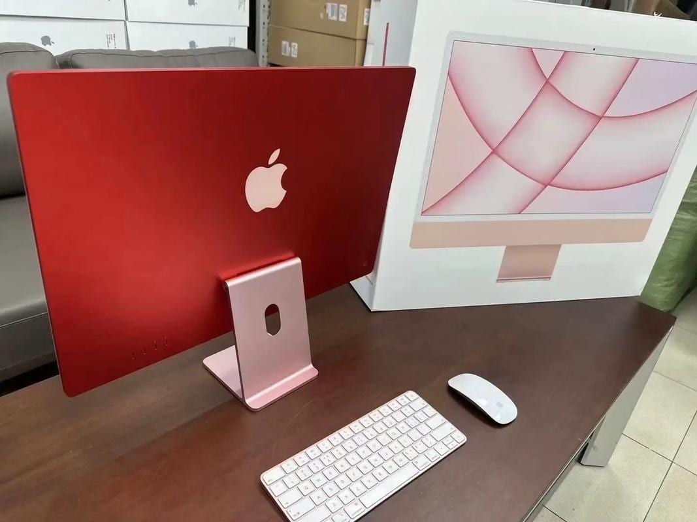

苹果 iMac 24 英寸 (M3)

iMac 24 英寸 2023 款升级 M3 芯片，8 核 CPU 与最高 10 核 GPU，性能较前代明显提升。24 英寸 4.5K 视网膜显示屏色彩出众，11.5 毫米超薄机身配多彩配色，六扬声器与三麦克风系统齐全，适合家庭、教育与轻创作用户一体式入手。
客观评测
iMac 24 英寸 M3 版延续超薄一体设计，M3 芯片单核性能强劲，日常办公、网页、照片编辑十分流畅，也能胜任 1080p/4K 视频剪辑与轻度开发。4.5K 视网膜屏支持 P3 广色域与 500 尼特亮度，显示素质在同价位一体机中几乎没有对手。实测日常负载下风扇极少转动，噪音接近环境底噪。短板在于接口偏少且全为 USB-C 形态，扩展坞几乎必买，内存与存储也无法后期升级，选购时需一步到位。
主观点评
这台机器最大的魅力是把桌面变成一幅画：彩色超薄机身、细腻到看不出像素的屏幕，开机那一刻心情都会变好。写文档、修图、看视频都很舒服，键盘带触控 ID 也很方便。但 8GB 内存版本开多了标签页就会捉襟见肘，想用得久建议直接上 16GB，再配个扩展坞解决接口焦虑。它适合审美优先、需求以图文与影音为主的用户。
优点与不足
- 4.5K 视网膜屏显示效果细腻通透
- 超薄多彩机身，颜值与家居融入感极强
- M3 能效出色，日常使用几乎无声
- 接口数量少，且仅 USB-C 形态
- 内存与存储无法后期扩展
- 标配 8GB 内存对多任务略显局促
参数规格
| 处理器 | Apple M3（8 核 CPU，最高 10 核 GPU） |
|---|---|
| 内存 | 8GB/16GB/24GB 统一内存 |
| 硬盘 | 256GB/512GB/1TB/2TB SSD |
| 屏幕 | 24 英寸 4.5K 视网膜屏（4480×2520） |
| 屏幕亮度 | 500 尼特，P3 广色域，原彩显示 |
| 摄像头 | 1080p FaceTime 高清摄像头 |
| 音频 | 六扬声器系统，三麦克风阵列 |
| 接口 | 两个雷雳/USB 4，两个 USB-C（高配机型） |
| 网络 | Wi-Fi 6E + 蓝牙 5.3 + 千兆以太网（电源适配器内置） |
| 系统 | macOS |
| 键鼠 | 带触控 ID 的妙控键盘与妙控鼠标 |
| 机身厚度 | 约 11.5 毫米 |
| 配色 | 蓝、绿、粉、银、黄、橙、紫七色 |
| 重量 | 约 4.43 千克 |